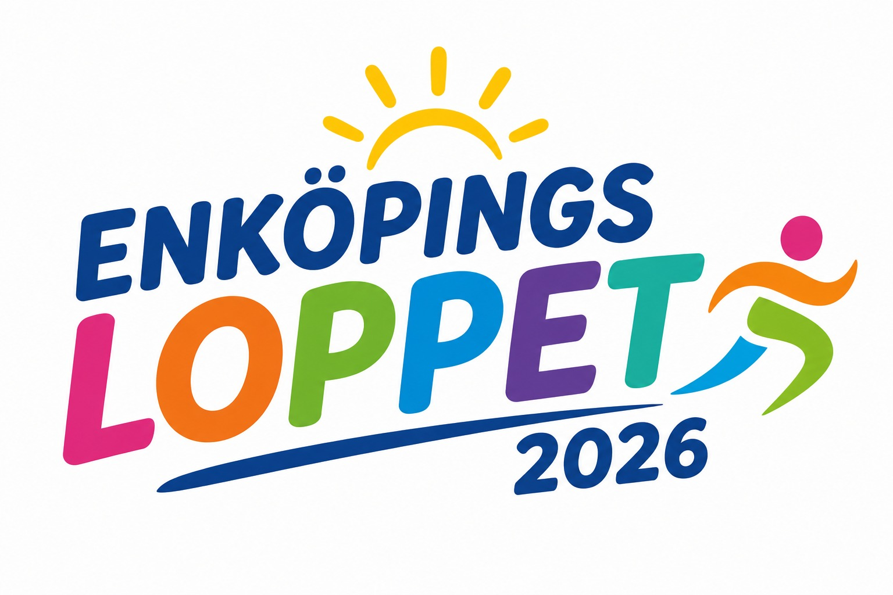
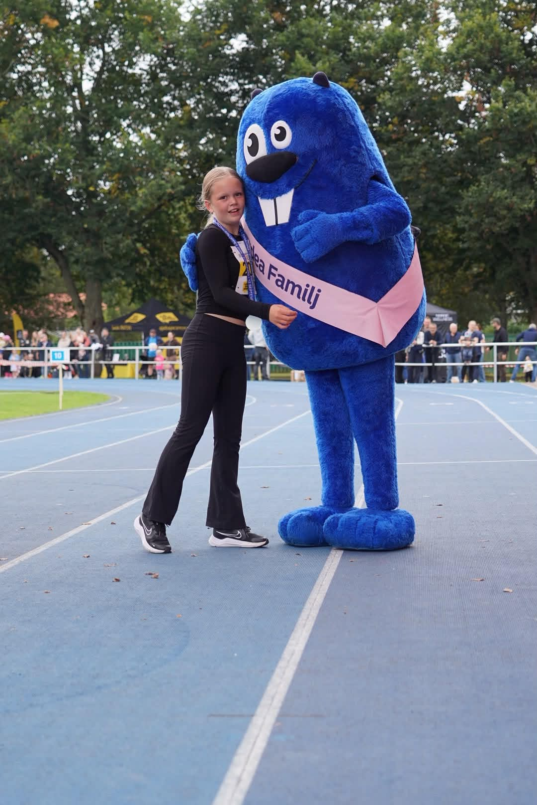
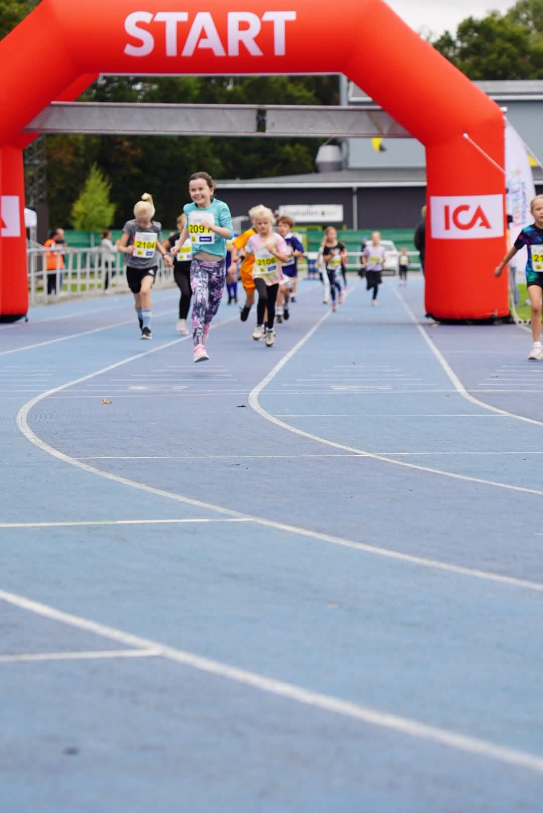
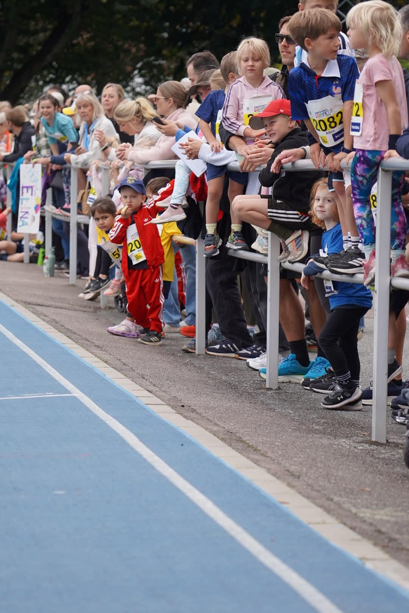
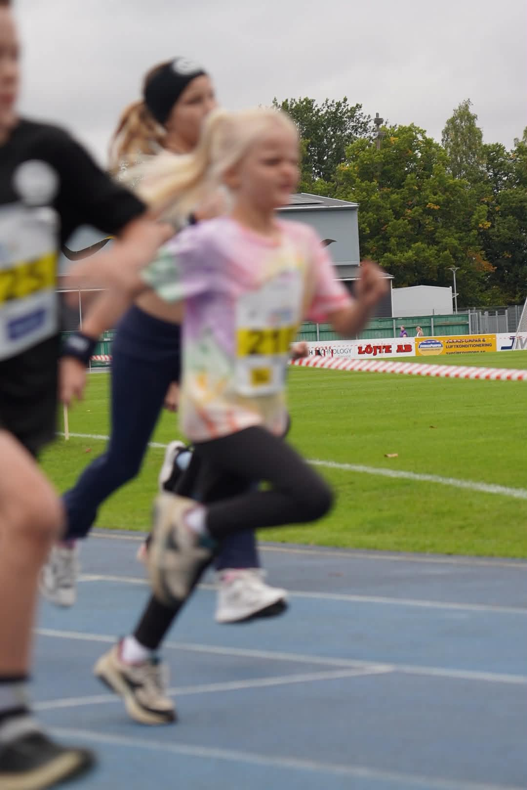

Enköpingsloppet
Den årliga löparfesten i Enköping
NYTT FÖR I ÅR:
Om loppet
En folkfest för hela Enköpings stad

Enköpingsloppet är en årlig löpartävling som samlar hundratals löpare från hela Sverige. Vi erbjuder lopp för motionärer på alla nivåer, nybörjare till elit.
Ajabaja Cancer-loppet
Ett barnlopp i samarbete med Ajabaja Cancer. Loppet genomförs på löpbanan inne på ENA-vallen. Loppet syftar till att skapa rörelseglädje för barn samtidigt som vi uppmärksammar det viktiga arbete som organisationen gör för familjer som drabbats av barncancer.
APC 5,5
En vacker två varvs-bana runt Drömparken. Perfekt för dig som vill springa, jogga eller gå lite kortare än milloppet. Alla är välkomna!
ICA Maxi-milen
En platt och naturskön 10 km-bana genom Enköping. Banan är kontrollmätt av Svenska Friidrottsförbundet. Perfekt för dig som vill utmana dig själv på en längre sträcka eller för dig som vill slå personbästa på milen.
Banan
Banan går runt och igenom Enköping. Du får se vackra vyer över Vattenparken, Drömparken och andra fina områden i Enköping. Längs 10km-banan finns en vattenstation. Rutten är byggd för att vara både vacker och snabb.
- Längd: 5,5 km för APC-loppet och 10 km för ICA Maxi-milen
- Terräng: Mestadels asfalt med ett par korta partier av grus
- Start och mål: ENA-vallen
- Kontrollmätt: 10km-banan är kontrollmätt av friidrottsförbundet
Bra att veta
Innan loppet
- Gemensam uppvärmning för alla som vill!
- Se till att vara på plats i god tid för att hämta ut din nummerlapp.
Under loppet
- Vattenstation kommer finnas på alla lopp (ca halvvägs).
- Musik och hejarop utlovas längs vägen.
Efter loppet
- Alla får medalj!
- Målservice med återhämtningsdryck och snacks till alla löpare.
- Resultatservice: Se din sluttid på webben direkt efter att du har gått i mål.
Schema
- Evenemangsområdet öppnar på ENA-vallens IP
- Start Ajabaja Cancer-loppet
- Start APC-loppet (5,5 km)
- Start ICA Maxi-milen (10 km)
- Prisutdelning (10 km-loppet)
- After Run på Kesuddens Bryggeri
Bilder från Ajabaja-loppet




Hör av dig
Vi svarar gärna på dina frågor
Har du frågor om Enköpingsloppet? Vi hjälper dig gärna — hör av dig via mejl.
- PlatsEnköping, Sverige
- Mejla oss info@enkopingsloppet.se